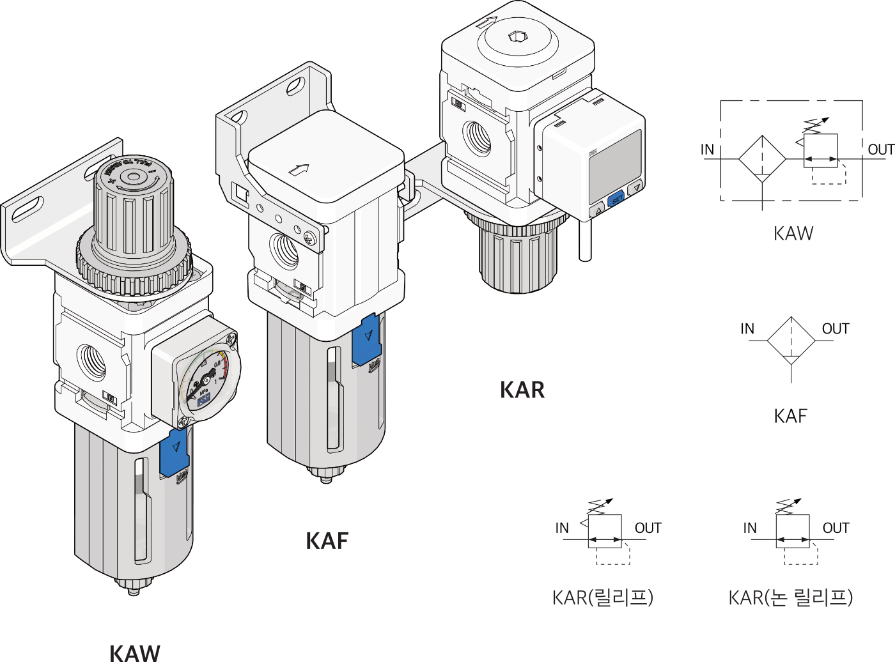
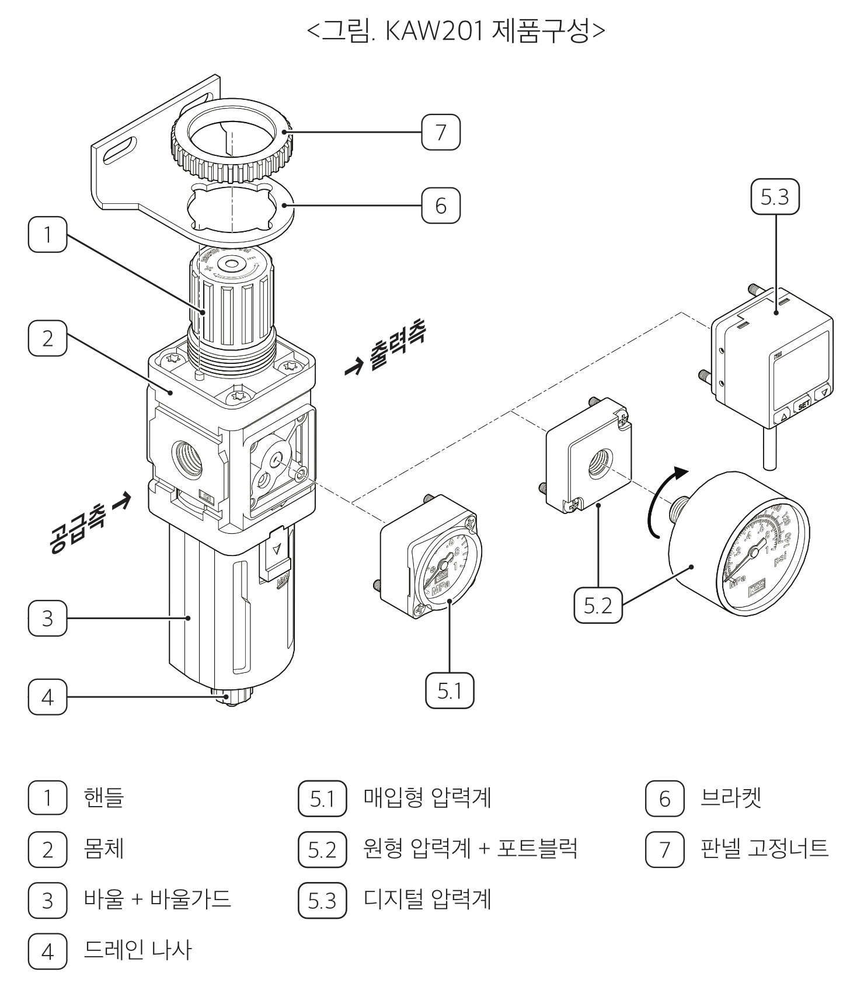
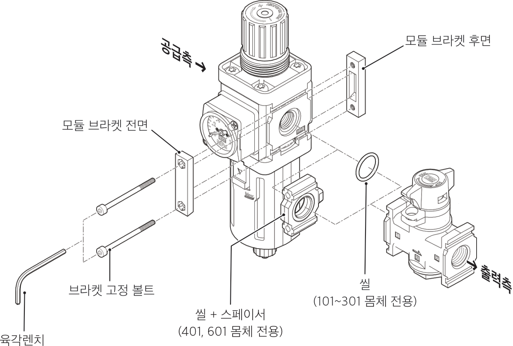
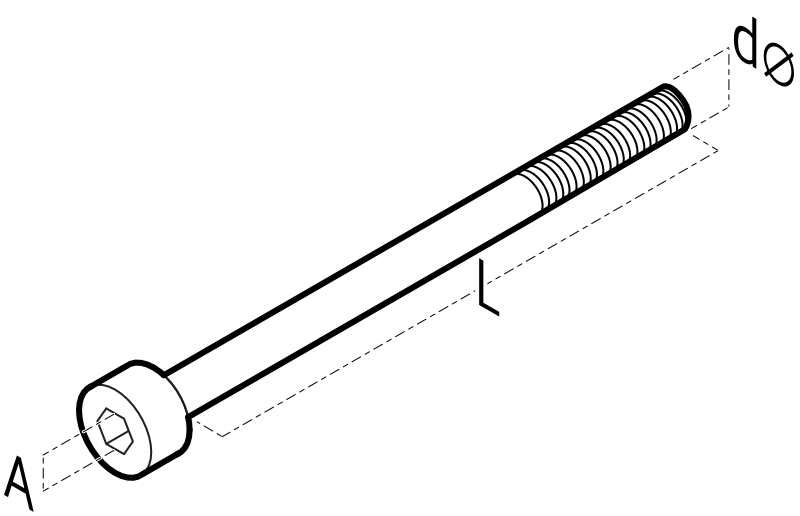

KAW-/KAF-/KAF
필터 레귤레이터, 필터, 레귤레이터 (모듈러 타입)

 본 설명서는 사용자 지침 및 제품 작동에 중요한 정보를 담고 있습니다.
본 설명서는 사용자 지침 및 제품 작동에 중요한 정보를 담고 있습니다.
제품 사용전 반드시 읽어보시기 바랍니다.
안전 지침 표시기호
본 문서에는 "주의", "경고" 그리고 "위험" 이라는 표시기호로 잠재적인 위험 수준을 나타내고 있습니다.
위험 - 주의하지 않으면 사망 또는 심각한 부상에 이르는 긴급한 위험
경고 - 주의하지 않으면 사망 또는 심각한 부상으로 이어질 수 있는 위험
주의 - 주의하지 않으면 가벼운 부상을 초래할 수 있는 위험
안전 유의사항
안전 지침
- 제품 사용전 사용 설명서를 빠짐없이 읽고 안전수칙을 준수하십시오.
- 본 설명서를 향후 참조를 위해 안전한 장소에 보관하십시오.
- 제품을 임의로 개조 및 분해, 조립을 하지 마십시오.
- 제품의 라벨이나 사용자 메뉴얼에 명시된 사용 조건을 준수하십시오.
- 제품의 조작 및 설치, 분리는 주변 상태의 안전을 확인 후 실시하여 주십시오.
- 명기되지 않은 조건이나 환경에서의 사용은 안전 대책을 충분히 검토하여 주시고, 당사와의 상담을 권장 드립니다.
전문 인력의 자격
- 제품에 대한 충분한 지식과 경험이 있으신 분의 취급을 권장합니다.
- 제품 사용용도의 적합성 여부는 시스템의 설계 또는 사양을 결정하는 분께서 판단하여 주십시오.
보증 및 면책사항
제품을 사용하실 때 아래와 같은 "보증 및 면책사항"을 적용합니다.
하기 내용을 확인하신 후 당사 제품을 사용해 주십시오.
- 표준 제품에 대한 보증기간은 사용 개시일로부터 1년 이내 또는 납품 후 18개월 이내 중 먼저 도래하는 시점의 것을 적용합니다.
- 보증기간 중 당사의 귀책으로 인한 고장이나 손상이 명확할 시에는 대체품/필요한 교환 부품을 제공하며, 추가적인 손실에 대해서는 부담하지 않습니다. 여기서의 보증은 당사 제품에 대한 보증을 의미하며 제품의 고장으로 유발된 여타 손상은 보증의 대상 범위에서 제외됩니다.
제품사양
KAW
| 항목 | KAW101 | KAW201 | KAW301 | KAW401 | KAW601 |
|---|---|---|---|---|---|
| 관접속구경 | Rc(PT)1/8" | Rc(PT)1/4" | Rc(PT)3/8" | Rc(PT)1/2" | Rc(PT)1" |
| 압력계 접속구경 | Rc(PT)1/16" | Rc(PT)1/8" | Rc(PT)1/8" | Rc(PT)1/4" | Rc(PT)1/4" |
| 사용 유체 | 여과된 압축 공기 | ||||
| 주변 및 사용유체 온도 | -5 ~ 60 ℃ (단, 결빙이 없어야 함) | ||||
| 보증내 압력 | 1.5 Mpa | ||||
| 사용압력 | 0.05 ~ 0.85 Mpa | ||||
| 설정압력범위 | 0.05 ~ 0.85 Mpa | ||||
| 여과도 | 표준: 5 μm, 옵션: 20 μm, 40 μm | ||||
| 바울/바울가드 재질 | 바울: 폴리카보네이트 / 바울가드: 나이론 | ||||
| 작동 방식 | 표준: 릴리프타입 / 옵션: 체크밸브내장 | ||||
| 드레인 타입 | 자동 드레인(차압식 / 플로트식) | ||||
| 중량 | 78g | 215g | 520g | 850g | 2,550g |
KAR
| 항목 | KAR101 | KAR201 | KAR301 | KAR401 | KAR601 |
|---|---|---|---|---|---|
| 관접속구경 | Rc(PT)1/8" | Rc(PT)1/4" | Rc(PT)3/8" | Rc(PT)1/2" | Rc(PT)1" |
| 압력계 접속구경 | Rc(PT)1/16" | Rc(PT)1/8" | Rc(PT)1/8" | Rc(PT)1/4" | Rc(PT)1/4" |
| 사용 유체 | 여과된 압축 공기 | ||||
| 주변 및 사용유체 온도 | -5 ~ 60 ℃ (단, 결빙이 없어야 함) | ||||
| 보증내 압력 | 1.5 Mpa | ||||
| 사용압력 | 0.05 ~ 0.85 Mpa | ||||
| 설정압력범위 | 0.05 ~ 0.85 Mpa | ||||
| 작동 방식 | 표준: 릴리프타입 / 옵션: 체크밸브내장 | ||||
| 중량 | 67g | 185g | 430g | 690g | 1,790g |
KAF
| 항목 | KAF101 | KAF201 | KAF301 | KAF401 | KAF601 |
|---|---|---|---|---|---|
| 관접속구경 | Rc(PT)1/8" | Rc(PT)1/4" | Rc(PT)3/8" | Rc(PT)1/2" | Rc(PT)1" |
| 사용 유체 | 여과된 압축 공기 | ||||
| 주변 및 사용유체 온도 | -5 ~ 60 ℃ (단, 결빙이 없어야 함) | ||||
| 보증내 압력 | 1.5 Mpa | ||||
| 사용압력 | 0.05 ~ 0.85 Mpa | ||||
| 여과도 | 표준: 5 μm, 옵션: 20 μm, 40 μm | ||||
| 바울/바울가드 재질 | 바울: 폴리카보네이트 / 바울가드: 나이론 | ||||
| 드레인 타입 | 자동 드레인(차압식 / 플로트식) | ||||
| 중량 | 70g | 140g | 290g | 470g | 1,400g |
제품 구성 및 조립도

모듈 조립방법
조립 유의사항
유체 공급방향에 유의하여 조립하여 주십시오.
- 순서: 공급측 → 출력측"
- 공급방향을 역순으로 조립하여 구동시 오작동이나 고장의 원인이 됩니다.
- 모듈러 조립 기본순서 : 필터 → 레귤레이터 → 루브리케이터
- 다수의 필터 조립시 여과도가 큰 것에서 작은 순으로 공급측에서 출력측으로 조립합니다.
예) 여과도 40μm → 20μm → 5μm → 0.3μm → 0.1μm → 0.01μm

조립 방법
-
조립할 제품 사이에 씰을 체결시킵니다.
101, 201, 301 몸체- 좌측에 위치한 제품의 출구포트에 있는 씰 체결 홈에 씰을 체결시킵니다.401, 601 몸체- 씰+스페이서를 제품 사이에 체결시킵니다. -
양쪽 제품을 위치 시킨후 모듈 브라켓을 전, 후면 고정합니다.
- 브라켓 고정 볼트를 브라켓의 전면에서 후면방향으로 조립합니다.
- 조임토크 :
브라켓 고정볼트 부품규격

| 적용모델 | 모델 사이즈 | 육각렌치 사이즈(A) | 볼트 규격(dXL) | 고정볼트 부품코드 |
|---|---|---|---|---|
| KAW, KAF, KAR | 201 | 2.5mm | M3X40L | |
| KAW, KAF, KAR | 301 | 3mm | M4X45L | |
| KAW, KAF, KAR | 401 | 4mm | M5X50L | |
| KAW, KAF, KAR | 601 | 5mm | M6X70L |
설치 및 해체
설치 전 유의사항
가압상태의 제품은 인명피해와 물적 손해를 유발할 수 있습니다.
설치 작업 전, 반드시 제품과 배관 내부의 압력을 배출하여 주십시오.
- 유지보수나 안전한 조작을 위해 제품 주변의 여유공간을 마련해 주십시오.
- 습도 및 온도가 높은 장소에는 설치하지 말아 주십시오. 성능저하 또는 작동 불량의 원인이 됩니다.
- 배관전에 배관 등의 플러싱 혹은 세정을 충분히 실시하여 관 내의 이물질을 제거해 주십시오. 배관이나 피팅을 나사체결하는 경우에도 배관 나사의 절분이나 씰 재가 기기 내부에 유입되지 않도록 하여주십시오. 작동불량의 원인이 됩니다.
공압배관
- 유량의 방향을 확인하여 제품을 위치 시킵니다.
제품 몸체에 IN 과 OUT 또는 화살표시를 확인하십시오. - 공압포트에 배관이나 피팅의 나사부를 체결합니다.
- 암나사측을 잡고 적정 토크로 실시해 주십시오.
체결토크가 부족하면 느슨해지거나 제대로 씰링되지 않을 수 있으며, 체결토크가 지나치면 나사 파손 등의 원인이 됩니다. - 공압포트를 완전히 밀봉 후 공압 튜브를 연결합니다.
드레인 배관
-
드레인 배출구가 아래방향으로 되도록 수직으로 설치하십시오.
횡방향이나 위방향으로는 사용할 수 없습니다. -
오토드레인 배출 배관의 경우, 오토드레인 키트(AD201F, AD301N, AD401N)는 외경 ∅6(내경 ∅4) 튜브를 사용하며 길이는 5m 이내로 해주십시오.
해체
해체 작업 전, 반드시 제품과 배관 내부의 압력을 배출하여 주십시오.
- 시스템 전체와 제품에서 공기를 배출하십시오.
- 배관이나 피팅에서 잠금장치를 눌러서 푼 다음 호스 라인을 당겨 빼내십시오.
- 피팅을 연결 플랜지에서 푼 다음 돌려 꺼내십시오.